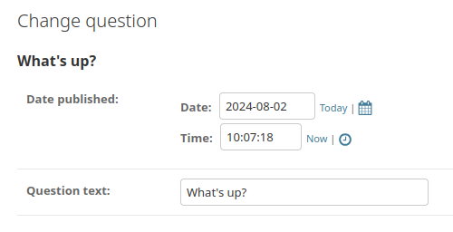
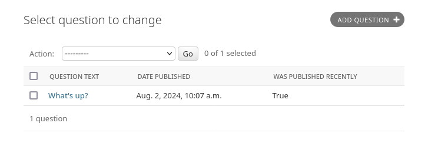

はじめての Django アプリ作成、その 7¶
このチュートリアルは チュートリアル その6 の続きです。ここでは、引き続き Web 投票アプリケーションの開発を続け、 チュートリアル その2 で少し触れた、Django が 自動生成する管理サイトのカスタマイズに焦点を当てます。
困ったときは:
このチュートリアルの実行に問題がある場合は、FAQ の Getting Help セクションに進んでください。
admin フォームのカスタマイズ¶
admin.site.register(Question) の呼び出しによって Question モデルを登録したことで、Django はデフォルトの形式でオブジェクトを表示できました。 admin フォームの表示方法や操作の仕方をデフォルトから変更したいこともよくあります。それには、オブジェクトを登録する時にオプションを指定します。
ためしに、編集フォームでのフィールドの並び順を並べ替えてみましょう。 admin.site.register(Question) の行を以下のように置き換えてみてください。
polls/admin.py¶from django.contrib import admin
from .models import Question
class QuestionAdmin(admin.ModelAdmin):
fields = ["pub_date", "question_text"]
admin.site.register(Question, QuestionAdmin)
このように、モデルの admin のオプションを変更したいときには、モデルごとに admin クラスを作成して、 admin.site.register() の 2 番目の引数に渡すと いうパターンに従ってください。
上の例では、「Publication date」フィールドの表示位置を「Question」フィールドよりも前に変更しています:
二つしかフィールドがないので、あまりぱっとした変化ではありませんね。しかし admin フォームで数十ものフィールドを操作するような場合には、直感的なフィー ルドの並び順というものはユーザビリティ上重要な要素です。
また、数十ものフィールドがある場合、フォームを複数のフィールドセットに分割したいこともあるでしょう。
polls/admin.py¶from django.contrib import admin
from .models import Question
class QuestionAdmin(admin.ModelAdmin):
fieldsets = [
(None, {"fields": ["question_text"]}),
("Date information", {"fields": ["pub_date"]}),
]
admin.site.register(Question, QuestionAdmin)
fieldsets の各タプルの先頭の要素はフィールドセットのタイトルです。 フォームは以下のように表示されます。
管理サイトのチェンジリストページをカスタマイズする¶
さあ、これで Question の管理ページはだいぶよくなってきました。今度は「チェンジリスト」ページをすこしいじりましょう。チェンジリスト (change list) は、システム上の全ての Question を表示するページです。
現時点では以下のように表示されています。

デフォルトでは、Django は各オブジェクトの str() を表示します。しかし、個々のフィールドを表示できた方が便利なこともあります。そのためには、 list_display 管理オプションを使います。これは、オブジェクトのチェンジリストページで表示するフィールド名のリストをカラムとして表示するものです:
polls/admin.py¶class QuestionAdmin(admin.ModelAdmin):
# ...
list_display = ["question_text", "pub_date"]
念のため、 チュートリアル その2 の was_published_recently() メソッドも含めましょう。
polls/admin.py¶class QuestionAdmin(admin.ModelAdmin):
# ...
list_display = ["question_text", "pub_date", "was_published_recently"]
これで、Question のチェンジリストのページは以下のようになります:
カラムのヘッダをクリックすると、カラムの値に応じてエントリを並べ換えできます。ただし was_published_recently ヘッダは例外であり、これはメソッドの戻り値を使った並べ換えをサポートしていないからです。 was_published_recently のカラムヘッダは、デフォルトではメソッド名 (アンダースコアを空白に置き換えたもの) になっていることに注目してください。また、各行は戻り値の文字列表現となっています。
次のように、display() デコレーターをそのメソッドに使用することで改善できます（チュートリアル2 で作成された polls/models.py ファイルを拡張します）。
polls/models.py¶from django.contrib import admin
class Question(models.Model):
# ...
@admin.display(
boolean=True,
ordering="pub_date",
description="Published recently?",
)
def was_published_recently(self):
now = timezone.now()
return now - datetime.timedelta(days=1) <= self.pub_date <= now
デコレータで設定できるプロパティに関する詳しい情報は、list_display を参照してください。
polls/admin.py ファイルをもう一度編集して、Question のチェンジリストのページに list_filter を追加して、さらに改良しましょう。それには、QuestionAdmin に次に行を追加します。
list_filter = ["pub_date"]
これで、「フィルタ (Filter)」サイドバーができ、チェンジリストを pub_date フィールドの値に従ってフィルタできるようになります。
フィルタの種類は、フィルタ対象のフィールドの種類に応じて変化します。pub_date は DateTimeField なので、Django はこのフィールドにふさわしいフィルタオプションが、「すべての期間 ("Any date")」「今日 ("Today")」「今週 ("Past 7 days")」「今月 ("This month")」であることを知っているのです。
いい感じに体裁が整ってきました。今度は検索機能を追加してみましょう。
search_fields = ["question_text"]
これでチェンジリストの上部に検索ボックスが表示されます。ユーザが検索語を入力すると、 Django は question_text フィールドを検索します。フィールドはいくらでも使えますが、舞台裏では LIKE クエリを使うのでデータベースに過剰な負荷をかけないために常識的な範囲にしましょう。
さて、ここでお知らせしたいこととして、チェンジリストには最初からページ分割機能があります。デフォルトではページあたり 100 個の要素を表示します。ページ分割、検索ボックス、フィルタ、日付による階層化、カラムヘッダを使った並び替え の機能は、すべて協調して思いのままに動作します。
管理サイトのルック & フィールをカスタマイズする¶
管理サイトの上部には「Django 管理サイト (Django adminstration)」と表示されていますが、これはいささか滑稽ですね。これは単なるプレースホルダテキストにすぎません。
ただし、Djangoのテンプレートシステムを使用して変更できます。 Django admin はDjango自体を利用しており、そのインターフェースはDjango独自のテンプレートシステムを使用しています。
プロジェクト テンプレートをカスタムする。¶
djangotutorial ディレクトリ内に templates ディレクトリを作成してください。テンプレートは、Djangoがアクセスできる任意の場所に配置できます（Djangoはサーバーが実行されているユーザーとして動作します）。しかし、プロジェクト内にテンプレートを配置するのが良い慣習とされています。
設定ファイル (mysite/settings.py) を開いて、TEMPLATES 設定オプションの中に、次のように DIRS オプションを追加します。
mysite/settings.py¶TEMPLATES = [
{
"BACKEND": "django.template.backends.django.DjangoTemplates",
"DIRS": [BASE_DIR / "templates"],
"APP_DIRS": True,
"OPTIONS": {
"context_processors": [
"django.template.context_processors.debug",
"django.template.context_processors.request",
"django.contrib.auth.context_processors.auth",
"django.contrib.messages.context_processors.messages",
],
},
},
]
DIRS は、Django がテンプレートを読み込む時にチェックする、ファイルシステム上のディレクトリのリストです。サーチパスのようなものです。
テンプレートの構成
static ファイルと同じように、すべてのテンプレートを1つの大きな templates ディレクトリにまとめることも 可能 ではあります。しかし、特定のアプリケーションと結びつくテンプレートは、プロジェクトのテンプレートディレクトリ (templates) ではなく、それぞれのアプリケーションのテンプレートディレクトリ (polls/templates など) に置くべきです。 なぜ そうするのかについては 再利用可能アプリのチュートリアル で詳しく説明します。
さて、templates の中に admin という名前のディレクトリを作りましょう。Django 自体のソースコード内にある、デフォルトの Django admin テンプレートディレクトリ (django/contrib/admin/templates) を探して、 admin/base_site.html というテンプレートを、新しく作ったディレクトリにコピーします。
Django のソースファイルの場所はどこ？
Django のソースファイルがシステム中のどこにあるのか分からない場合は、以下のコマンドを実行してください。
$ python -c "import django; print(django.__path__)"
...\> py -c "import django; print(django.__path__)"
そして、ファイルを編集して {{ site_header|default:_('Django administration') }} を置き換えます。(中括弧を含む)に自分のサイト名を入れてください。最終的には、次のようなコードのセクションになるはずです:
{% block branding %}
<div id="site-name"><a href="{% url 'admin:index' %}">Polls Administration</a></div>
{% if user.is_anonymous %}
{% include "admin/color_theme_toggle.html" %}
{% endif %}
{% endblock %}
このようなアプローチを今使ったのは、テンプレートをオーバーライドする方法を示すためです。実際のプロジェクトで今行ったのと同じカスタマイズを行いたい場合には、 django.contrib.admin.AdminSite.site_header 属性を使えば、もっと簡単に設定できます。
このテンプレートファイルは {% block branding %} や {{ title }} のようなテキストを多く含んでいます。 {% と {{ のタグは Django のテンプレート言語の一部です。 チュートリアル その3 で見たように、Djangoが admin/base_site.html をレンダリングする時に、このテンプレート言語が評価され、最終的なHTMLページが生成されます。
Django のデフォルトのadminテンプレートはすべてオーバーライドできることに注意してください。テンプレートを上書きするには、base_site.html で行ったのと同じことをしてください -- デフォルトのディレクトリからカスタムディレクトリにコピーして変更してください。
アプリケーション用の テンプレートをカスタマイズする¶
するどい読者はこう質問されるでしょう: DIRS はデフォルトで空っぽなのに、 Django はなぜデフォルトの admin テンプレートを見つけることができたのだろう? その答えは APP_DIRS が True に設定されているため、 Django は自動的に各アプリケーションのパッケージのサブディレクトリからフォールバックとして templates/ を探すからです (django.contrib.admin は一つのアプリケーションだということを忘れないでください)。
投票アプリケーションはそれほど複雑ではないので、カスタムの admin テンプレートは必要ないでしょう。しかしアプリケーションがさらに凝ったものに成長し、何か機能を実現するために標準の admin テンプレートを変更する必要が出てきた場合、 アプリケーションの テンプレートを編集するほうが、 プロジェクト のテンプレートを編集するより賢い選択になるでしょう。そうすれば、投票アプリケーションを他のどの新しいプロジェクトにも追加でき、投票アプリケーションが（自分自身に必要な）カスタムテンプレートを確実に見つけることができます。
Django のテンプレートの検索方法に関する詳しい情報は、テンプレート読み込み ドキュメント を参照してください。
admin index ページをカスタムする¶
近い話題として、 Django の admin index ページのルックアンドフィールをカスタマイズもできます。
デフォルトでは、 admin アプリケーションで登録された INSTALLED_APPS のすべてのアプリケーションが、アルファベット順に表示されます。レイアウトを大きく変更したい場合もあるでしょう。なんといっても、index ページは admin の中でおそらく最も重要なページなので、使いやすいほうがいいですからね。
カスタマイズ対象のテンプレートは admin/index.html です。 (前セクションで admin/base_site.html にしたことと同じことをしてください。つまり、デフォルトのディレクトリからコピーして、カスタムテンプレートのディレクトリに配置してください)。編集してみると app_list というテンプレート変数が使われているのがわかるでしょう。この変数にはインストールされた全 Django アプリが含まれています。これを使う代わりに、各オブジェクトの admin ページヘのリンクをハードコードし、好きなようにカスタマイズできます。
管理画面に満足したら、 このチュートリアルのパート8 を読み、サードパーティ製パッケージの使い方を学んでください。
Last update:
1月 22, 2025